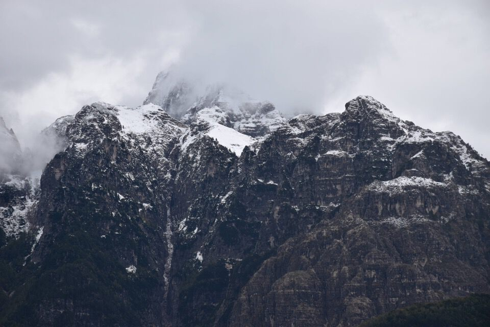
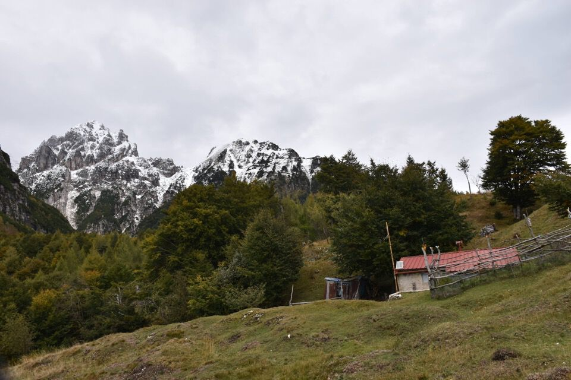

Sospettavo che esistesse un vecchio sentiero sul lato Nord del Plananize, che collegasse la forcje di Patòc con Garlitàis (Agâr da lis Tais): d'altronde Fabio Paolini nel suo libretto ne fa un accenno, senza tuttavia dare alcuna indicazione (eccetto fornire il toponimo Pale da le Frunt (*)), e pure Antonio Armellini in Trois Neris cita un fantomatico "sentiero Patòc - Garlitais" (nelle descrizioni delle foto del Cozarèl).
Mi sono astenuto da chiedere alcunché a riguardo ad Armellini, altrimenti che gusto c'è? Il fascino di percorsi come questo non sta nel sentiero in sé, bensí nel piacere della scoperta.
Che soddisfazione trovare questo sentiero solo grazie ai propri studi!
Fra l'altro dalla forcje di Patòc in direzione opposta inizia un altro sentiero, pure questo non segnato sulle mappe, che attraversa il lato del Nord dello Jouf e porta al Zé, ai piedi del Cuel di Clâri. Quest'altro l'ho "scoperto" lo scorso inverno con Ivan e Luciana, di ritorno dalla Scjalute Sante (ah che avventure!), di cui trovi una descrizione nella relativa pagina del mio sito.
Nelle mappe in commercio non c'è segnato nulla, eccetto - incredibilmente - nella cartina riportata sull'introvabile guida CAI/TCI alle Alpi Carniche del Castiglioni (1954), di cui possiedo una copia che mi è stata clamorosamente regalata. Ho evidenziato il sentiero Patòc - Garlitàis quivi riportato.
Partiamo da Campolaro, ma diamo l'impressione di essere due improvvisati non capendo dove inizi il sentiero CAI, per fortuna incontriamo subito Raffaele di Sclûse che ci illumina riguardo al punto di partenza. Scambiamo due parole e mi dice che il sentiero Patòc - Garlitais è l'unico che lui non ha mai percorso in settant'anni in giro per questi monti! Me lo sconsiglia dicendo che è un sentiero "nero nero" e che ormai neppure i cacciatori ci passano piú... vedremo.
Seguiamo il rilassante sentiero che porta a Patòc passando per Zeresarie: qui uno scorcio verso la val Raccolana con una zona particolarmente ignorata dagli escursionisti.
Già che ci siamo visitiamo il stâli da le Grope, l'unico ristrutturato degli stavoli di Patòc.
Giunti alla forcje di Patòc iniziamo a vagare in cerca della traccia incriminata: come temevo è sparito ogni segno nei dintorni della forcella, ma una volta che si trova la traccia non la si perde piú.
Ho il tracciato impresso su mappa CTRN al 5000, ma non lo pubblico perché sarebbe inutile: basta tenersi un po' in versante riu Mulín e, ignorando una promettente traccia che scende (ex sentiero verso Cuestemulín?), prima o poi la si trova.
Bingo! Che gioia trovare la traccia e pure il primo taglio!
La traccia è cosí ben battuta che diventa quasi noiosa.
Non mancano begli scorci verso il selvaggio sottogruppo del Cimone.
Qui lo Jovèt di Cjadramàç con in centro foto il cengione Sud e il canale pieno di mughi che abbiamo percorso a inizio giugno.
Il malefico castelletto del Cozarèl Bas.
Mai mi sarei aspetto di trovare una vecchia bollinatura (presente solo nel tratto centrale)!
Segni misteriosi sul troi.
È fatta: qui la sella di Garlitàis, luogo stupendo, con bella vista su Cozarèl e Montusèl.
Il stâli dai Longhíns in Garlitàis Adâlt.
Saliamo a Nauràzis, toponimo slavo che denota l'ominima sella piú che un rilievo particolare (Colle Nauràzis credo sia un'invenzione dei cartografi): qui in foto il crinale che prosegue verso il Belepéit.
Dalla dorsale Nauràzis - Belepéit ci sono un sacco di modi interessanti per tornare a valle: Scjalúte Sante, via dei cacciatori, Plan de la Vacje, ecc..., ah che belli monti di Sclûse!
Queste mie parole mi ricordano il Tinivella, che nel suo "Alpi e Alpinismo" del 1942, recita: «Guglia Nera di Pétèrét! Cresta Guzza! Bernina! E per venire a noi: Grauçarie, Plauris, Canín, Jôf Fuart, Montasio, Ialovec! Chi ha visto, comprende, ricorda e rivive. Non si creda che solo le cime alte, dal nome roboante, siano quelle che diano soddisfazione, oh no! Non tempo di esagerare nel dire semplicemente: Forte di Osoppo!»
Un Sart dissolvente.
Sottogruppo del Cimone, versante occidentale.
Il versante Est del Pisimoni con la cima spolverata di neve.
Dallo stâli di Belepéit (diroccato) e dal vicino stâli dal Ferninando proseguaimo e andiamo a visitare ciò che resta del curioso osservatorio militare ('15-18) costruito proprio sull'orlo del cretòn di Belepéit: che posto!
Vale assolutamente la pena fare questa piccola deviazione, dato che ci si trova con Sclûse sotto i piedi!
Scendiamo per Pulize: bella vista sul cretòn, sotto cui sono transitato durante una gita precedente.
(*) Bruno mi fa sapere che le frunt sono le foglie secche: grazie!